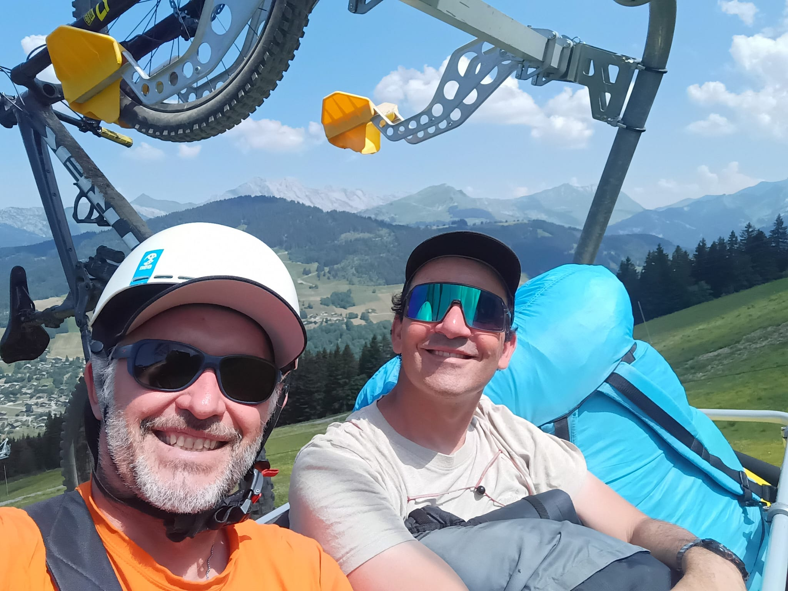
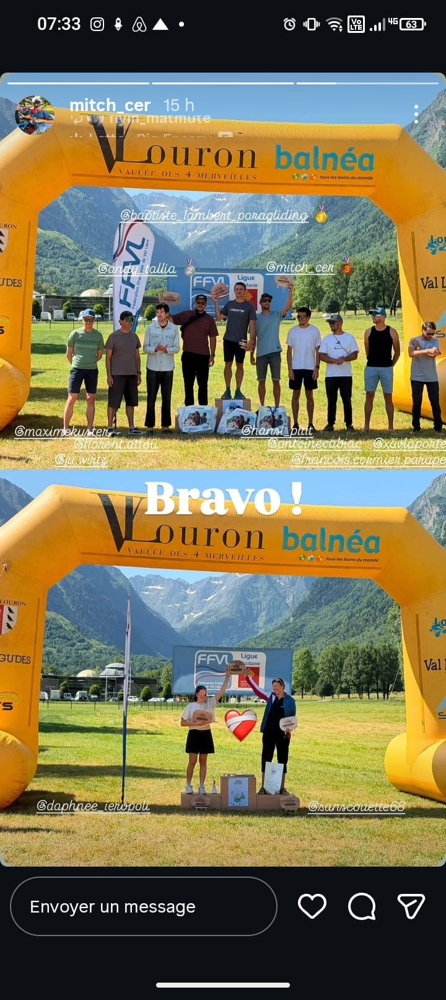

Actualités, compétitions et conseils pour découvrir le parapente à La Clusaz.
À la une
Saison estivale 2026 : Aravis Parapente vous accueille tout l’été
Publié le

La saison d’été démarre à La Clusaz ! Toute l’équipe d’Aravis Parapente
est prête à vous faire découvrir les magnifiques paysages des Aravis vus
du ciel.
Jusqu’à la fin du mois de juin, nous vous accueillons
les week-ends. À partir du 1er juillet
et jusqu’au 30 août, nous volons
tous les jours, sous réserve de conditions
météorologiques favorables.
Que ce soit pour un baptême découverte, un vol sensation ou pour offrir
un bon cadeau, c’est le moment idéal pour vivre une expérience
inoubliable en parapente au-dessus de La Clusaz.
Une équipe passionnée
Sam et Julien seront heureux de vous accueillir tout au long de l’été et
de partager avec vous leur passion du vol libre dans une ambiance
conviviale et sécurisée.
À très bientôt dans les airs avec
Aravis Parapente !
À la une
Championnats de France 2026 : Michel Cervelin 3e, Julien Wirtz 6e
Publié le

Les Championnats de France 2026 ont réuni les meilleurs pilotes français
dans des conditions exigeantes et techniques.
Les pilotes signent une très belle performance avec deux résultats
remarquables.
Michel Cervelin
Michel Cervelin décroche une superbe troisième place nationale et monte
sur le podium du championnat.
Julien Wirtz
Julien Wirtz termine à une excellente sixième place et confirme son
niveau parmi l’élite française.
Félicitations à eux pour ces performances exceptionnelles.
Championnat de France de parapente 2025 : résultats et bilan
Publié le
Le Championnat de France 2025 s’est déroulé à Millau dans le cadre des
Natural Games. Les pilotes ont bénéficié de conditions exceptionnelles,
avec plusieurs manches rapides et techniques.
Classement hommes
Luc Armant
Honorin Hamard
Clément Latour
Baptiste Lambert
Julien Wirtz
Classement femmes
Constance Mettetal
Victoria Chevallier
Pauline Machabert
Conseils pour un premier vol réussi
Publié le
Vous préparez votre premier baptême de parapente à La Clusaz ? Portez
des chaussures de sport, une veste adaptée à la saison et venez avec
l’envie de profiter pleinement du paysage.